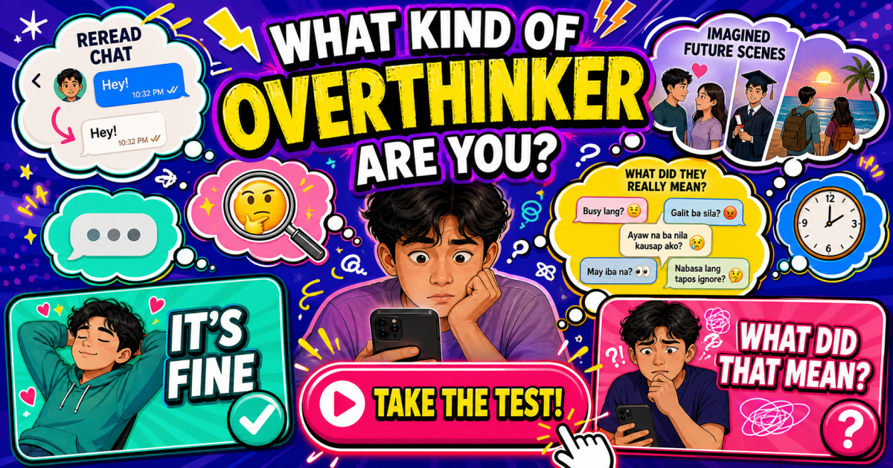

RELATABLE PERSONALITY TEST
What Kind of
Overthinker
Are You?
It is fine or what did that mean?
Pick what you really do in ten familiar overthinking moments.
PICK YOUR HONEST THOUGHT
YOUR OVERTHINKER TYPE

Find your overthinking style
From one-word replies and changed emojis to typing dots and 2 AM thought marathons, ten familiar moments reveal where your mind usually goes.
Choose your honest reaction to unlock one of eleven shareable types, from Chill Reality Checker to Perfect-Message Editor.
When One Thought Becomes Twenty
You send a message and get no reply.
Was the person busy? Did the message sound strange? Should you have used a different emoji? Maybe everything is completely fine—but your brain has already created twelve possible explanations.
Overthinking can show up in many everyday situations: waiting for replies, remembering old conversations, planning something that has not happened yet or replaying a small moment late at night.
What Kind of Overthinker Are You? turns those relatable situations into a lighthearted personality game.
Ten Choices, Eleven Possible Types
The game contains ten two-choice situations involving chats, waiting, memories, planning and late-night thoughts.
Choose the response that feels closer to what you would normally do.
Your pattern of answers is then used to select from eleven different playful overthinker types.
The result is designed purely for entertainment. It is not a mental-health screening, psychological assessment or diagnosis, and it should not be used to make conclusions about anyone's health.
Does Your Friend Overthink the Same Things?
The interesting part is that two people who both call themselves overthinkers may worry about completely different situations.
Compare results with your friends and see where your thinking styles differ.
You might discover that the situation you would forget in five minutes is exactly the one your friend would still be thinking about at 2 a.m.